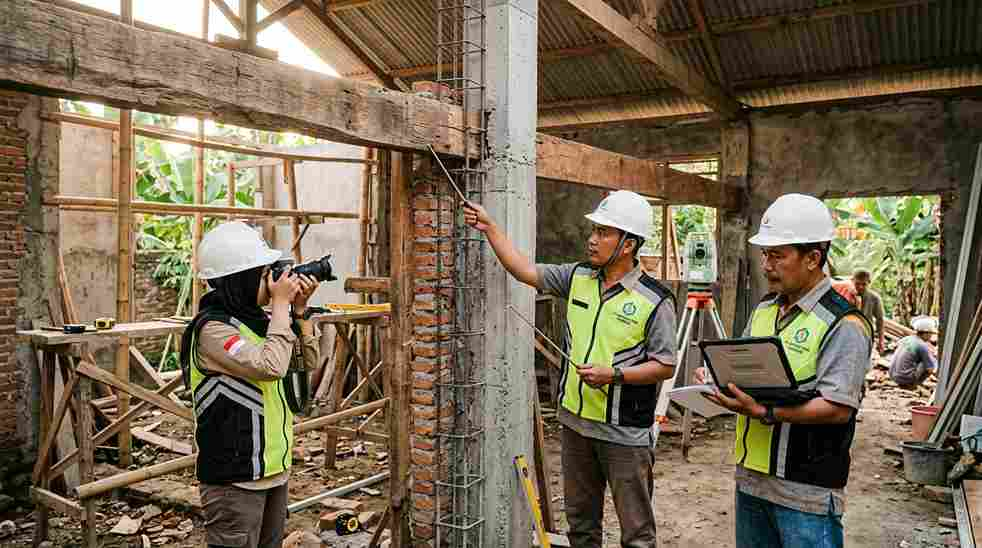

Jasa renovasi rumah Jakarta yang terpercaya menawarkan survey lokasi gratis, RAB transparan, pengerjaan sesuai jadwal, dan garansi struktur resmi agar hasil renovasi awet dan sesuai kebutuhan keluarga.
Cakupannya bisa berupa renovasi sebagian ruang seperti dapur dan kamar mandi, atau renovasi total seluruh bangunan.
Legalitas usaha yang jelas juga menjadi indikator penting kredibilitas kontraktor.
Apa Saja Tanda Jasa Renovasi Rumah Jakarta yang Terpercaya?
Jasa renovasi terpercaya biasanya memiliki legalitas usaha yang jelas, portofolio proyek nyata, serta memberikan RAB tertulis sebelum pekerjaan dimulai.
Beberapa indikator yang bisa dicek sebelum menunjuk kontraktor renovasi:
- Memiliki badan usaha resmi (PT/CV) dengan faktur pajak yang jelas.
- Menyediakan dokumentasi proyek sebelumnya, bukan hanya gambar render.
- Bersedia melakukan survey lokasi langsung sebelum memberikan penawaran harga.
- Mencantumkan garansi struktur atau garansi pekerjaan secara tertulis dalam kontrak.
Jika Anda masih dalam tahap mencari inspirasi sebelum memutuskan renovasi, referensi desain rumah minimalis modern bisa membantu menentukan arah gaya yang diinginkan sebelum masuk ke tahap konsultasi teknis.
Apa Saja yang Termasuk dalam Layanan Renovasi Rumah?
Layanan renovasi umumnya terbagi menjadi renovasi sebagian, seperti dapur dan kamar mandi, hingga renovasi total yang mengubah struktur dan tata ruang secara menyeluruh.
Renovasi sebagian pun bisa dilakukan tanpa mengganggu penghuni, asalkan area kerja dipisahkan dengan baik dari area yang masih ditempati.
Cakupan layanan yang biasa ditawarkan meliputi:
| Jenis Renovasi | Contoh Pekerjaan | Estimasi Durasi | Cocok Untuk |
|---|---|---|---|
| Renovasi ringan | Cat ulang, ganti keramik, perbaikan atap bocor | 1-2 minggu | Perawatan berkala |
| Renovasi sebagian | Dapur, kamar mandi, penambahan kamar | 3-6 minggu | Kebutuhan ruang spesifik |
| Renovasi total | Bongkar struktur, ubah denah, tambah lantai | 2-4 bulan | Rumah lama yang perlu diremajakan |
Sebelum menentukan skala renovasi, ada baiknya memahami dulu estimasi biaya bangun rumah per m2 sebagai acuan kasar.
Hal ini karena logika perhitungan biaya renovasi sebagian juga mengikuti pola serupa berdasarkan luas area yang dikerjakan.
Sebagian penyedia jasa juga membantu proses administrasi terkait perizinan jika ada perubahan struktur, namun hal ini sebaiknya dikonfirmasi langsung sejak tahap konsultasi awal.
Baca Juga: 15 Desain Rumah Minimalis Modern Tren 2026
Bagaimana Alur Kerja dari Konsultasi hingga Serah Terima Proyek?
Alur kerja standar dimulai dari konsultasi kebutuhan, survey lokasi, penyusunan RAB, pengerjaan, hingga serah terima disertai masa garansi.

Tahapan umum yang biasa dilalui klien:
- Konsultasi awal untuk memahami kebutuhan dan anggaran renovasi.
- Survey lokasi langsung untuk mengukur kondisi bangunan eksisting.
- Penyusunan RAB dan gambar kerja untuk disetujui bersama — RAB yang realistis biasanya sejalan dengan kisaran harga pasar umum dan mencakup rincian material, upah, serta estimasi waktu pengerjaan secara jelas.
- Pelaksanaan renovasi dengan pengawasan berkala dari tim proyek.
- Serah terima hasil pekerjaan disertai dokumen garansi struktur.
Proses ini penting dijalankan berurutan agar tidak ada kesalahpahaman soal spesifikasi material maupun timeline pengerjaan di lapangan.
Berapa Lama Proses Renovasi Rumah Biasanya Berlangsung?
Durasi renovasi sangat bergantung pada skala pekerjaan, mulai dari beberapa minggu untuk renovasi ringan hingga beberapa bulan untuk renovasi total.
Faktor yang memengaruhi lama pengerjaan antara lain kondisi struktur bangunan lama, ketersediaan material, cuaca, serta kompleksitas desain yang diminta.
Kontraktor yang baik akan memberikan timeline tertulis di awal proyek sehingga klien punya gambaran jelas kapan rumah bisa kembali ditempati.
Kesalahan Umum Saat Memilih Jasa Renovasi
Kesalahan yang paling sering terjadi adalah memilih kontraktor hanya berdasarkan harga termurah tanpa mengecek legalitas dan rekam jejak proyek sebelumnya.
Kesalahan lain yang perlu dihindari antara lain tidak meminta kontrak kerja tertulis yang mencantumkan spesifikasi material.
Selain itu, melewatkan tahap survey lokasi sehingga estimasi biaya kurang akurat, serta mengubah desain berkali-kali di tengah proyek tanpa menghitung ulang anggaran juga sering terjadi.
Memilih jasa renovasi rumah Jakarta yang tepat pada akhirnya berarti memastikan legalitas usaha jelas, RAB transparan, dan ada garansi struktur tertulis sebelum pekerjaan dimulai.
Tim kami siap membantu mulai dari konsultasi awal, survey lokasi gratis, hingga serah terima proyek.
Lihat juga layanan renovasi kami secara lengkap, atau jika Anda masih merencanakan pembangunan dari nol, pelajari dulu desain rumah minimalis modern dan estimasi biaya bangun rumah per m2 sebagai langkah awal sebelum berkonsultasi dengan tim kami.